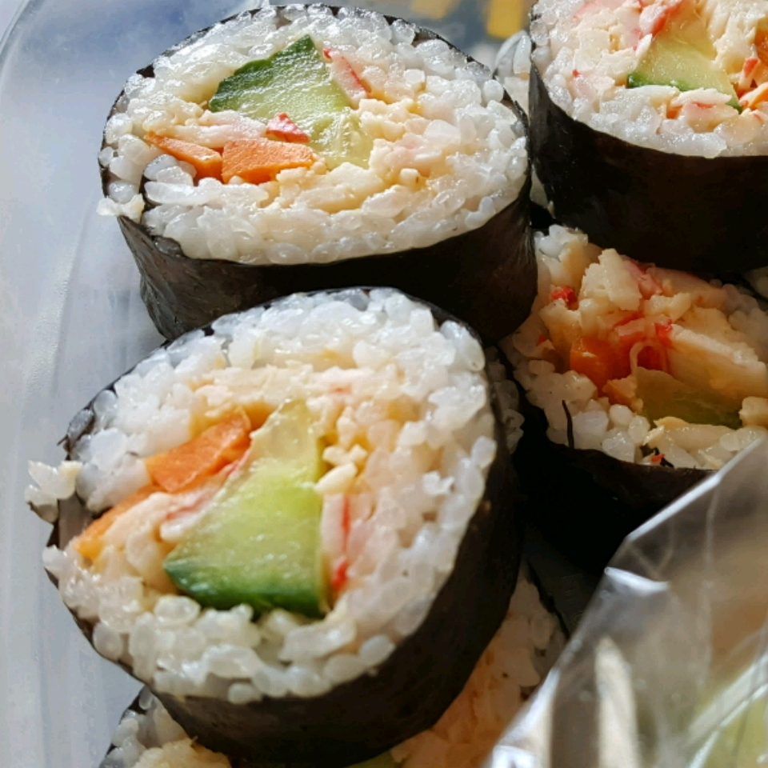

Sushi Rice

Description
Simple and easy sushi rice, very delicious. Can be modified to your taste.
Ingredients
- 2 1/4 cups Japanese sushi-style rice
- 1 (4 inch) piece konbu dried kelp (Optional)
- 3 cups water
- 1/4 cup rice vinegar
- 1/4 cup white sugar
- 1 1/4 teaspoons salt
Steps
- Place rice into a large, deep bowl. Fill with cold water and rub rice together with hands until the water turns milky white. Pour off the cloudy water, being careful not to pour out the rice. Repeat 3 or 4 times until you can see the rice through 3 inches of water.
- Drain the rice in a fine strainer, then place into a saucepan along with konbu and 3 cups water. Allow to stand for 30 minutes. Stir together rice vinegar, sugar, and salt until dissolved in a small bowl, set aside.
- Cover, and bring rice to a boil over high heat, then reduce heat to low, and simmer for 15 minutes. Remove from heat and allow to stand, covered, for 5 minutes.
- Scrape rice into a bowl; remove and discard the konbu. Stir in vinegar mixture until well incorporated and no lumps of rice remain. Allow to cool at room temperature. For a shinier appearance, use an electric fan to cool the rice rapidly.